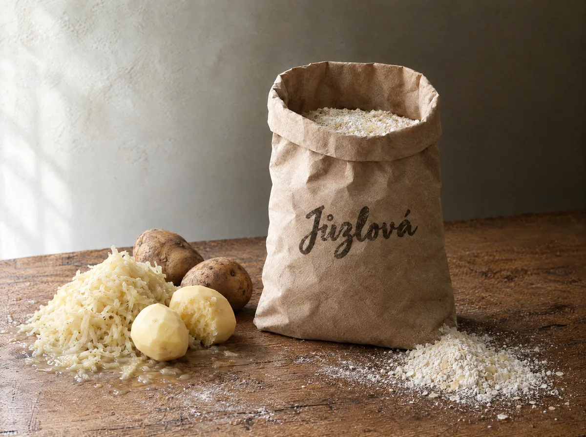
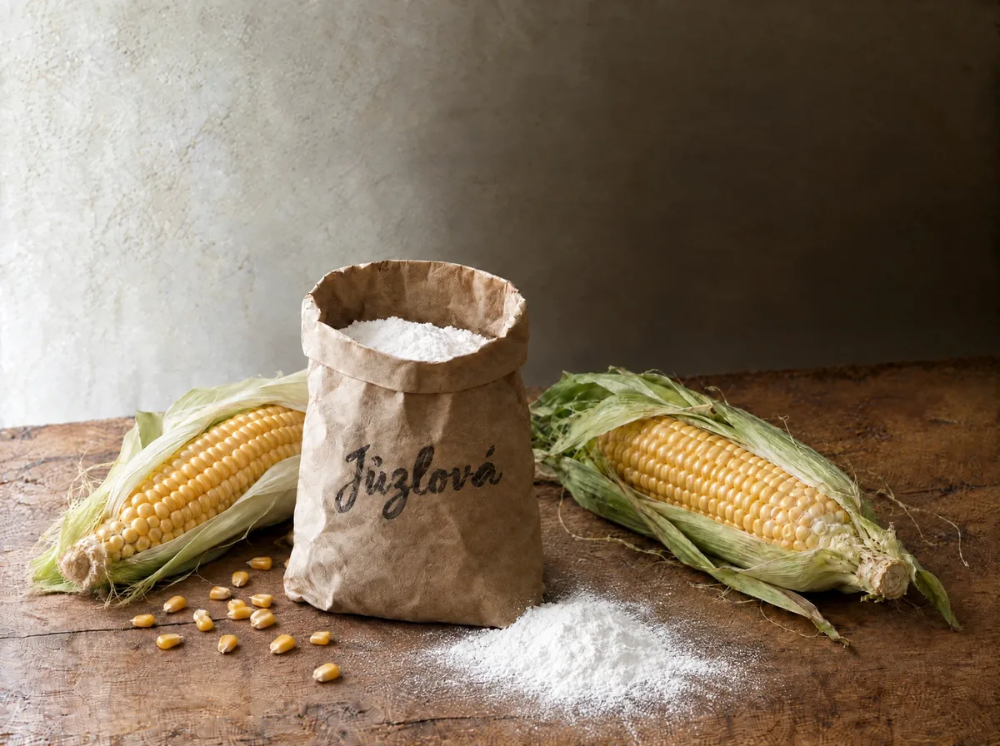
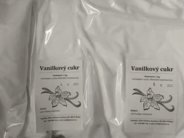
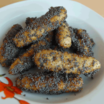
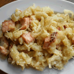

Poctivé potravinářské směsi z Vysočiny — bramborová těsta, pudingy, vanilínový cukr a kakao. Z mouky oceněné značkou KLASA, bez kompromisů v kvalitě.
Ochutnejte zdarmaNaše produktyChlupaté knedlíky máte hotové za 15 minut — a chutí je nerozeznáte od knedlíků připravovaných celé odpoledne.
Ozvěte se — rádi vám připravíme vzorek zdarma. Zboží si vyzvednete v Kochánově či Humpolci, nebo je přivezeme až k vám.
Napište si o vzorekCo vyrábíme
Pět směsí, které od roku 2004 dodáváme domácnostem, restauracím, jídelnám i cukrárnám v Čechách i na Moravě.

Náš nejvyhledávanější výrobek. Klasické knedlíky, šišky, krokety i gnocchi z jednoho těsta.
5 kg / 165 Kč

Bosáky podle tradiční receptury. Hotové za 15 minut, chutí k nerozeznání od domácích.
5 kg / 185 Kč

Kukuřičný škrob bez lepku, přirozená vanilková chuť. Na dezerty i pečení.
1 kg / 34 Kč · 400 g / 17 Kč

Tmavé cukrářské kakao s 21 % tuku. Výrazná barva i chuť moučníků a koktejlů.
500 g / 100 Kč

Rodinná výroba
Pšeničná mouka oceněná značkou KLASA pochází z mlýna v Havlíčkově Brodě, 12 km od naší dílny. Kukuřičný škrob v pudincích neobsahuje lepek.
Chlupaté knedlíky máte hotové za 15 minut — a chutí je nerozeznáte od knedlíků připravovaných celé odpoledne.
Vyrábíme kvalitu za cenu nižší než „supermarketové“ výrobky nejistého původu. Bramborové knedlíky: 5 kg za 165 Kč.
Inspirace do kuchyně
Osvědčené recepty, které z našich směsí připravíte rychle a bez práce navíc.

Tradiční sladká večeře z bramborového těsta: šišky obalené v máku s cukrem, přelité rozpuštěným máslem.

Koláč, jehož přípravu si užijí i děti. Pečení baví dvakrát — při přípravě i při ochutnávání.

Slovenská klasika z chlupatých knedlíků v prášku — halušky s kysaným zelím a vypečenou slaninou.

Rádi byste pohostili návštěvu, ale nejste zrovna Jamie Oliver? Nepečené bebe řezy zvládne opravdu každý.

Lehký moučník za půl hodiny: kontrast nahořklého kakaa a jemně sladké šlehačky. Bez mouky, tedy i bez lepku.

Hrníčkový perník, který si zamilujete pro snadnou přípravu i výbornou chuť. Nepotřebujete váhu — vystačíte si s hrnečkem.

Léto je tady a s ním i dozrávání jahod. Jednoduchý a rychlý recept, kterým za 20 minut potěšíte i největší mlsouny.
Ozvěte se — rádi vám připravíme vzorek zdarma. Zboží si vyzvednete v Kochánově či Humpolci, nebo je přivezeme až k vám.
Napište si o vzorek